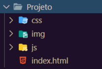
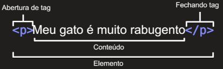
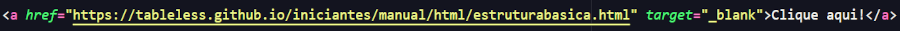

Para todo projeto de software existem algumas recomendações, ao construir um Web Site ou uma Aplicação Web vamos utilizar vários tipos de arquivos diferentes.
Nomes de arquivos e pastas dever ser escritos em letras minúsculas, sem espaços e sem caracteres especiais.
É recomendado que exista uma página inicial dentro de um arquivo chamado index.html.
Dentro da pasta do projeto é recomendado que sejam criadas mais algumas pastas com a finalidade de organizar os arquivos do projeto.
A linguagem HTML (Hypertext Markup Language) tem o objetivo de formatar textos através de marcações especiais denominadas tags. Documentos HTML são arquivos de texto ASCIIa. Todos os arquivos devem possuir a extensão .html.
-->O HTML não faz diferença entre letras minúsculas ou maiúsculas em suas marcações, mas recomenda-se usar as tags em letras minusculas.
Sintaxe do HTMLA sintaxe geral de uma tag é :

E de modo geral as tags aparecem em pares.
As tags podem possuir atributos, cada atributo tem um nome e uma funçao diferente. Na figura abaixo temos a tag img com o atributo src que serve para indicar a origem da imagem e a tag alt onde escrevemos um texto alternativo que aparece na tela quando a imagem não é carregada.]
 IMAGEM[img/TagImgComAtributos.png] TEXTO ALTERNATIVO: Tag img com atributos
IMAGEM[img/TagImgComAtributos.png] TEXTO ALTERNATIVO: Tag img com atributos
Na figura abaixo temos a estrutura básica de um arquivo HTML.

Caso queira saber mais clique na imagem abaixo ou aponte a camera do seu celular para o qrcode.
As tags abaixo sever para criar títulos, os títulos possuem uma hierarquia.


A tag abaixo sever para criar um paragrafgo.
Negrito e Itálico
Para deixar um texto em negrito é utilizada a tag strong que da um significado semântico.
Pra deixa um texto em itálico usa-se a tag em o que mostra que queremos dar ênfase ao texto.Utiliza-se a tag mark para delimitar um
trecho de texto para marcar.
A tag sub coloca o um texto em subscrito, exemplo H2SO4. A tag sup coloca um texto em sobrescrito, exemplo X3+Y2
Para colocar um icone na página o ideal é ter um arquivo de 16 x 16 pixels ou 32 x 32 pixels e utilizamos a tag link dentro do head.

Para colocar imagens na pagina utilizamos a tag img. Esta tag possui o parâmetro src onde colocamos o endereço da imagem a ser mostrada, e o parâmetro alt onde escrevemos um texto alternativo para o caso da imagem não carregar. A imagem pode estar na pasta img do projeto ou pode estar online, neste caso colocamos o endereço da imagem na internet.

Para criar links utliza-se a tag a, esta tag pode ser colocada em qualquer lugar da página, e até mesmo dentro de outra tag, o link pode ser para uma página do seu projeto ou para uma página externa, ela possui um parâmetro chamado target, esse parametro indica como a página do link será aberta.
O parâmetro target pode assumir o valor "_blank" que faz a página abrir em outra aba, caso omitido ele assume o valor de "_self", que indica que a página será aberta na mesma aba da página atual.